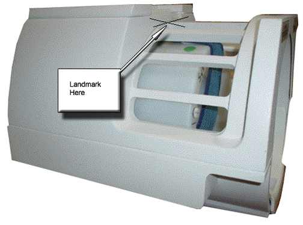
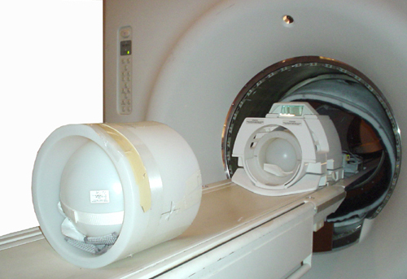
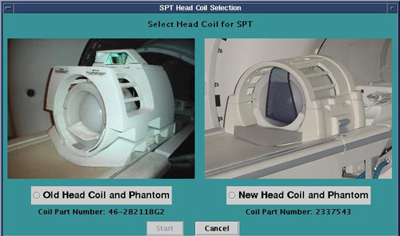
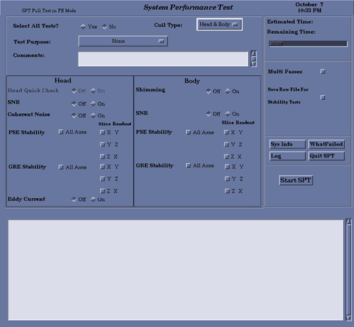

Proprietary to General Electric Company
Direction 5440000, Rev# 5
Signa HDxt Service Methods
Module Version 1.0, Version Date 5/15/07
Proprietary to General Electric Company |
| Required Persons | Preliminary Reqs | Procedure | Finalization |
|---|---|---|---|
| 1 | Not Applicable | 2 hours | Not Applicable |
| Last Update | 01/11/2006 |
| Item | Qty | Effectivity | Part# | Manufacturer | |
|---|---|---|---|---|---|
| Head Coil | 1 | - | 46-282118G8 | - | |
| Body TLT Sphere With Body Short Loader Shell | 1 | - | 2248363 | - | |
| The 3.0T Head TLT Spherical Phantom With Head Loader Shell | 1 | - | 2248364 | - | |
| Condition | Reference | Effectivity |
|---|---|---|
Cancel out of any previous exams. Click on [End Exam]. | - | - |
Remove any patient positioning devices before placing the nesting plate or other phantoms on the table. In particular, remove patient restraints or other devices that attach to the tracks along the edges of the cradle. | - | - |
Place the head coil on the patient table.
Place the Head TLT phantom in the head loader shell. See Illustration 1.
Illustration 1: Head TLT Sphere In Loader Shell Positioned In The Center Of The Head Coil For SPT

Measure 1135 from the landmark. This is where the cross hairs of the Body TLT loader shell should go. Be sure the Body TLT sphere is inside the loader shell. Refer to Illustration 2.
Illustration 2: Full SPT Setup for e2 (Without Nesting Plate)

| ||||
| Test functionality and system functionality may be adversely affected if the previous exam is not terminated. Click on [End Exam] to terminate any previous exam. It is not necessary to click on [New Pt] as SPT automatically enters the scan protocol when it is invoked via the MR Tools menu. | ||||
To start the SPT Full Test tool from the Service Browser, follow the steps on Illustration 3.
Illustration 3: Starting the SPT Test Tool

The SPT Head Coil Selection screen appears. See Illustration 4.
Illustration 4: Select Head Coil for SPT Screen

| NOTE: | The coil choice is only available for 1.5T systems. For the 3T , there is only one coil available as given in the system tool. The user must go to the Step directly. |
Select the head coil currently in use, then click on [Start]. A SPT Test menu appears in a window on the desktop. The Field Engineer should always use the Full Test Mode (see Illustration 5).
In the Select All tests field, click [No].
To select a reason for the test, click the button to the right of Test Purpose. Select a reason from the list. If desired, enter text in the Comments field.
For systems with a CRM Body Coil, in the Body section, select Shimming [Off].
Click the [On] button to select the test that you want to run.
For TwinSpeed, select the GradMode(s) to be used while running the tests.
To select Multiple Passes of the test(s), select the [Multi Passes] button, then enter the desired number of passes in the box that appears to the right.
Click [Start SPT] to begin.
You may be prompted to make additional selections as the test begins.
Status messages will appear in the text box below the menu as the tests are run. Use the scroll bar on the right side of the box to move up or down through the messages.
| NOTE: | Beginning with 14.0 software, SPT will begin by performing a phantom check. The phantom check will verify that the correct phantoms are being used and that they are in the correct locations. For information on how to view the results from the Phantom Check, see Viewing Results and Calibration Files. |
If desired, click the WhatFailed button. An example of WhatFailed output can be found in Troubleshooting.
| NOTE: | This screen will be displayed until you quit SPT, so if you're in a troubleshooting mode, all you need to do is press the [Start SPT] button to go again. |
Illustration 5: Field Engineer Test Selection - Full Test Example

To exit SPT, click the [[Quit SPT] button.
TwinSpeed ONLY: When finished with SPT place the power switch on the vacuum pump back into the ON position. Replace the cover onto the front of the TAC.
To view SPT results, select the Utilities tab on the Service Browser, then select [Report Manager].
Enter the Report Manager password (the same password used for the Service Methods CD-ROM) and press [Enter].
Do a TPS Reset after completing SPT to put the system back into a know state.
If for any reason a SPT scan is aborted, Shutdown and Reboot the system.